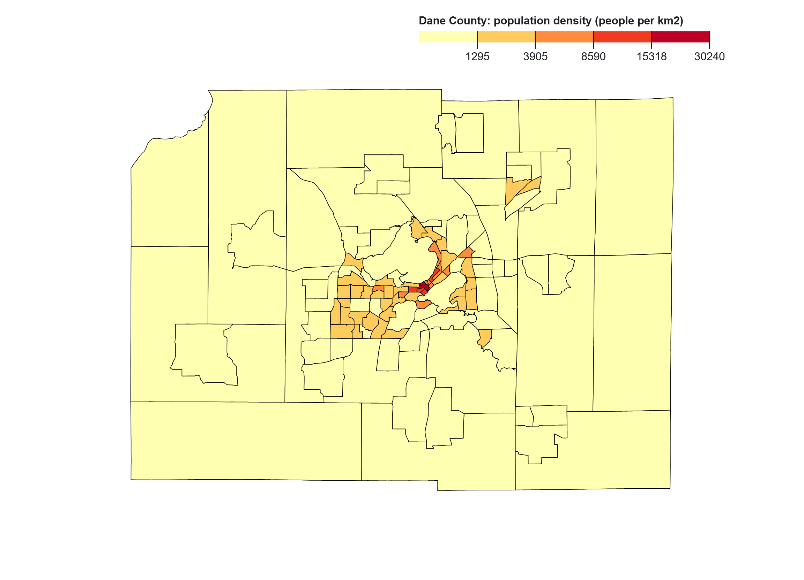
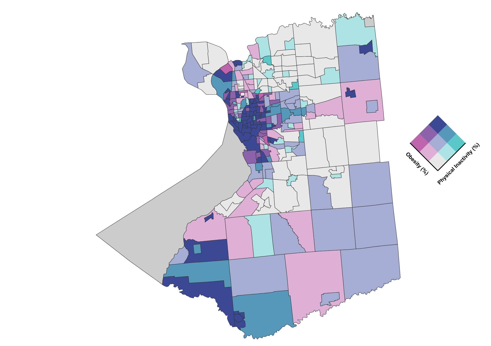

Choropleth Mapping

This choropleth map shows the spatial distribution of population density across Dane County. The highest densities are concentrated in central Madison, where a small cluster of census tracts appears in dark red, representing values above 15,000 people per km2. These areas form a compact urban core with dense housing and mixed land use.
Moving outward from downtown, population density decreases steadily into suburban and rural areas. Medium-density tracts form a transition zone around the city, while most peripheral areas are shown in light yellow, indicating very low density. This pattern highlights a clear urban-to-rural gradient, where population is strongly concentrated in the city center and becomes more dispersed toward the edges of the county.
Point Symbol Mapping

This map shows animal–vehicle collision (AVC) counts across Iowa counties using proportional symbols, where larger circles represent higher numbers of collisions. Higher AVC counts are concentrated in eastern and central Iowa, particularly in counties such as Linn, Scott, Johnson, and Polk, which include major urban areas and high-traffic road networks.
In contrast, many counties in western and northwestern Iowa show smaller symbols, indicating lower AVC counts. This pattern suggests that AVC occurrence is closely related to traffic volume and road density, with higher collision risk in areas where human activity and wildlife movement overlap.
Isarithmic Mapping

This isarithmic map shows mean annual temperature across Colorado, ranging from about -3°C to 13°C. The coldest values occur in the Rocky Mountains due to higher elevation, while temperatures increase toward the eastern plains.
The map reveals a strong west-to-east temperature gradient, with steep changes along the mountain front and more gradual variation across the plains. This pattern reflects the influence of elevation on temperature distribution.
Bivariate Mapping

This bivariate choropleth map shows the spatial relationship between obesity and physical inactivity across Erie County. Dark blue and purple tones are concentrated in central Buffalo, especially near the Lake Erie shoreline, indicating areas where both variables are relatively high. This cluster highlights a clear hotspot of combined health risk in the urban core.
Moving away from Buffalo into suburban and rural areas, the map shows lighter and more mixed colors, including teal and lavender. These areas reflect moderate or contrasting values, where one variable may be higher than the other. Overall, the pattern suggests a strong urban-to-suburban gradient, with the highest combined risk in the city center and more varied health conditions in the surrounding areas.
Flow Mapping

This project uses FlowMapper to visualize internal migration flows in Rwanda in 2010. Line thickness represents migration volume between administrative units.